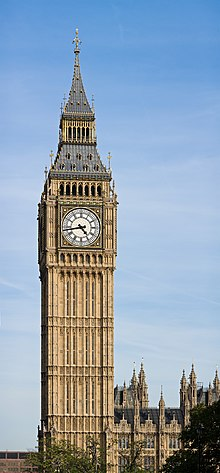

Confira agora alguns dos mais conhecidos pontos turísticos pela Europa:
Torre Eiffel
Torre Eiffel é uma torre de treliça de ferro forjado no Champ de Mars, em Paris, França. Tem o nome do engenheiro Gustave Eiffel, cuja empresa projetou e construiu a torre.

Coliseu
Coliseu, também conhecido como Anfiteatro Flaviano, é um anfiteatro oval localizado no centro da cidade de Roma, capital da Itália. Construído com tijolos revestidos de argamassa e areia, e originalmente cobertos com travertino é o maior anfiteatro já construído e está situado a leste do Fórum Romano.

Big Ben
Big Ben é um grande sino instalado na torre noroeste do Palácio de Westminster, a sede do Parlamento Britânico, localizado em Londres, no Reino Unido. O nome oficial da torre em que o Big Ben está localizado era originalmente Clock Tower, mas ela foi renomeada como Elizabeth Tower em 2012 para marcar o Jubileu de Diamante da Rainha Elizabeth II. A torre foi inaugurada durante a gestão de Sir Benjamin Hall, ministro de Estado da Inglaterra, em 1859.
